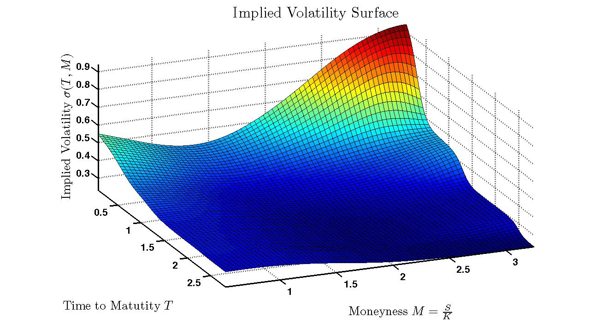

Work
I currently work as a quantitative analyst - quant for short - on structured interest rate derivatives for an investment bank. As an example, I have worked on the LIBOR transition, addressing the modelling implications for interest rate options of an industry shift from LIBOR term rates to compounded overnight Risk-Free Reference (RFR) rates. There are many fascinating problems to solve, and tools to develop in financial mathematics, using stochastic calculus and numerical methods, and this is currently what I get to spend the majority of my time on.
Education
I hold an MSc in Pure Mathematics from Imperial College London (ICL), where I took courses in commutative and homologiclal algebra, elliptic curves and Lie algebras. My masters' dissertation starts with the Grothendieck group, constructed from the abelian monoid of quadratic forms, and builds towards a proof of Pfister's Local-Global Principle using Lewis polynomials. It is entitled "Pfister's local-global principle and the u-invariant of formally real fields" and can be found below!
Between 2015 and 2018 I studied Mathematics and Economics at the London School of Economics and Political Science (LSE), taking courses in pure mathematics, econometric theory, probability theory and financial mathematics.
Projects
A snapshot of some personal projects, that can be found on my GitHub page.
Pure Mathematics

SABR and Implied Volatility

SABR is a stochastic volatility model, used in particular to capture smile when determining a full range of option prices, based on a finite number of liquid observations. I look to visualise the smile dynamics using React.The West Highland Way
I thought it would be helpful to recount my experiences on the West Highland Way, as the trek can be undertaken in 3, 4 or 7 days depending which sections hikers choose!
{% octicon person height:42 class:"fill-green d-inline mr-2" aria-label:person %} Reach out !
You can find me on LinkedIn. You can also check out my GitHub using the link below: